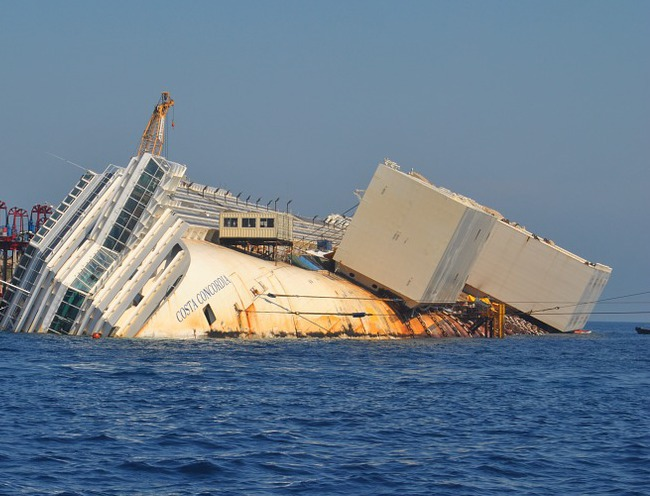
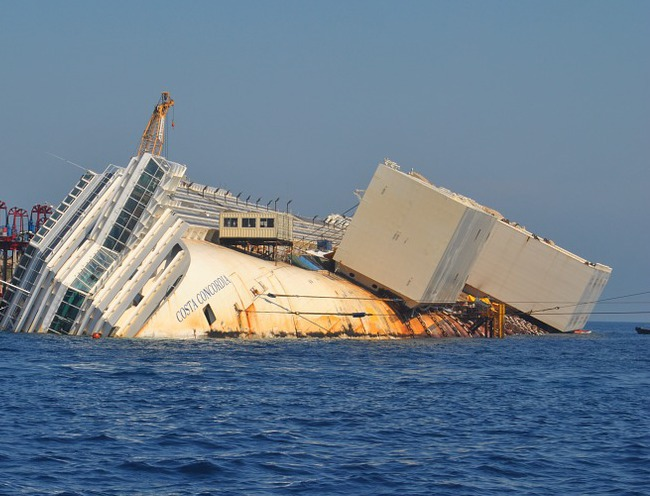

Voici l'épave du Costa Concordia !


Salutation visiteur!
Le mot « épave » a plusieurs sens, mais nous nous intéressons à celui de reste de navires ou d'objets abandonnés en mer.
La plupart de ces épaves sont des navires qui ont coulé lors des batailles de la Seconde Guerre mondiale (on en compte des milliers à l'heure actuelle!). On a aussi des navires de charge et des paquebots qui ont malheureusement rencontré des problèmes techniques, des rochers et des icebergs. Je suis sûr que tu connais déjà une épave dans ta vie, et oui celle de la Titanic causée par un iceberg de l'océan Atlantique Nord !
Voici une petite liste de naufrage et la cause de ce dernier :
-le Joola, qui se situait en 2002 vers la Gambie. Enfin septembre 2002, ce navire faisait le trajet Ziguinchor/Dakar. On comptait un peu plus de 2000 passagers alors que ce bateau pouvait contenir au maximum un peu plus de 500 personnes ! Alors malheureusement un peu avant 23 heures ne pouvant plus supporter presque le quadruple du nombre normal de passagers, le Joola se retourne et noie 1864 personnes sur 2000 un peu près (soit environ 93% de passagers tués!). En plus de cela, les secours sont venus 18h après les faits ! Ceci témoigne la pauvreté dans certains pays...
-Le Costa Concordia était un paquebot qui se situait vers l'île de Giglio le 13 janvier 2012. Il avait navigué très proche d'un récif côtier sur son côté gauche et le toucha, ce qui éventrait sa coque sur plus de 50 mètres de long et 7 mètres de largeur. Il fit un demi-tour et se coucha dans l'océan ce qui tua 32 personnes.
-L'Estonia était un ferry (Navire transportant des marchandises, des véhicules et des passagers pour une courte durée) qui faisait le trajet Tallinn/Stockholm le 27 septembre 1994 en début de soirée.
À cause d'un temps agité (gros vents, des vagues de 4 à 6 mètres etc.) l'étrave du bateau (Forte pièce qui termine la coque vers l'avant du navire et qui forme sa proue) se décroche et entraîne la chute de la porte-rampe avant. De l'eau rentre alors dans le ferry, plus précisément dans les ponts-garages ce qui entraîne la chute de l'Estonia. On compte alors aujourd'hui 852 morts sur 989 passagers (soit à peu près 86% de personnes mortes situées dans ce ferry !).
Oui car beaucoup d'entre eux contiennent des produits et des substances dangereuses (produits chimiques, pétrole etc.) qui polluent l'océan et qui tuent certaines espèces marines. Les épaves voient également leurs métaux se corroder (se détruire lentement) avec l'eau.
Mais les épaves sont attractives car ils peuvent :
-servir de refuges pour les poissons
-protéger certains poissons des prédateurs
-servir de « restaurants » pour certains poissons comme le thon, car on y trouve en ces lieux magnifiques des petits poissons et des crevettes.
-aider en matière de repères pour les poissons qui migrent.
Mais ils servent également aux pécheurs comme point de repère et donc certaines prises de poissons comme celles du thon se font souvent vers ces épaves, pauvres poissons...
Les épaves font aussi la joie des plongeurs, car pour eux ces derniers ne sont pas des vieux trucs en train de rouiller, mais un monde vivant peuplé de nombreuses espèces maritimes !
Fautes d'orthographe, belles idées pour remplir cette page de Wikiglouglou ?
Contactez nous ici:
-Mail: lunetdevinf@gmail.com
-Youtube: https://www.youtube.com/channel/UCLADMe-lGDABHRG9gpjnofw

Voici l'épave du Costa Concordia !